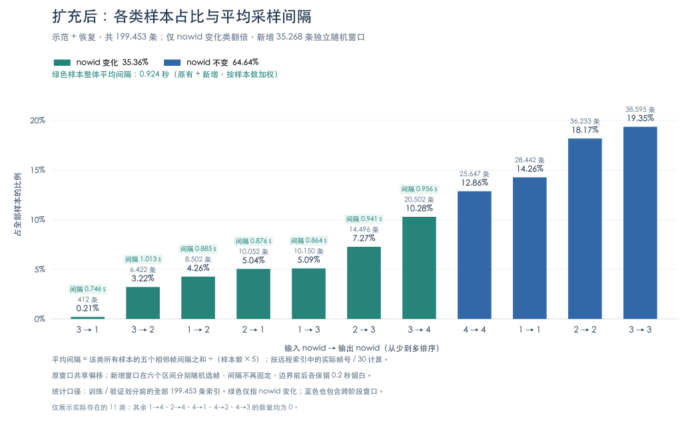

2026-10-04 · 30 fps · 每个样本 6 个时刻 × 3 个视角 · 原采样随机种子 0 · 补充采样随机种子 1
所有数量统一按 示范 + 恢复 展示：左边来自示范数据，右边来自恢复数据。某一来源没有该类样本时显示 0。
示范数据：58 组三视角视频、289 个 episode；恢复数据：22 组三视角视频、110 个 episode。合计 118,990 + 80,463 = 199,453 条索引，全部窗口唯一。
输入状态取倒数第二个采样时刻，监督状态与进度取最后一个采样时刻；仅一个真实帧时输入采用首阶段状态。普通同阶段样本最多 15 个，首阶段特殊样本每组最多 10 个。候选不足时取全部可用窗口，不再补足；所有类别均不放回。
远程两组正式索引已更新，共 199,453 条唯一窗口。保留原有 164,185 条窗口，在 1,472 处边界按原数量 k 补充 k 条独立随机窗口，新增 35,268 条。
仅扩充 跨阶段、nowid 变化 类：35,268 → 70,536 条；3 → 2 为 3,211 → 6,422 条，3 → 1 为 206 → 412 条。其他类别及原有窗口的帧号、状态、进度保持一致。
3 → 1 仍来自原标注中的 14 处边界。扩充增加了窗口组合，不增加独立异常事件数。
80 个 JSON 与本地逐一校验一致，delta 文件哈希未变。全部 199,453 条索引的去重、帧范围、状态、mask 与进度均验证通过；进度按既定回滚与最后一次贡献归一化方案独立重算核对。
索引仍采用统一六帧三视角格式；Dataset / DataLoader 可直接读取，训练与验证继续按原视频划分。
按输入 nowid → 输出 nowid分组，训练时采用下表作为各类的目标采样比例。合计 100.00%，其中 nowid 变化占 60.00%，nowid 不变占 40.00%。
| 输入 nowid → 输出 nowid | 最终训练采样比例 |
|---|---|
| 3 → 1 | 3.14% |
| 3 → 2 | 7.08% |
| 1 → 2 | 8.44% |
| 2 → 1 | 9.45% |
| 1 → 3 | 9.52% |
| 2 → 3 | 12.37% |
| 3 → 4 | 10.00% |
| 1 → 1 | 10.00% |
| 2 → 2 | 10.00% |
| 3 → 3 | 10.00% |
| 4 → 4 | 10.00% |
| 合计 | 100.00% |
确定过程：先以 3 → 4 的 20,502 条为上限，对四类 nowid 不变样本作数量截断计算，得到 152,544 条的参考分布；再将其中五类约 13.44% 的比例降至 10%，释放的约 17.20 个百分点平均分配给其余六类。按 0.01 个百分点分配取整余数后，采用上表作为最终比例。
应用方式：每个 epoch 按目标比例分配各类采样配额，类内随机打乱；不足时抽完一轮后重新打乱继续取样，再将各类样本混合打乱。验证集保留原始分布。
训练 DataLoader 已接入上述固定比例。默认按原视频划分后，训练集 180,104 条、验证集 19,349 条；每个 epoch 抽取 180,104 次，各类配额先取整再按余数补齐，单类误差小于一个样本。下方图表继续展示现有 199,453 条索引的实际分布。
已在远程完整索引上验证：每轮配额与总数正确，类内抽尽一轮后再重复，训练与验证视频无交叉，换轮会重新打乱，相同种子可复现，断点后的批次顺序一致，读取进程数不影响采样顺序。另用 4 个真实三视角样本验证批量读取，单进程与 2 个 worker 的图像、状态、mask 和进度标签一致；临时检查脚本已清理。
仅对 3 → 1、3 → 2、1 → 2、2 → 1 四类训练样本执行增强。在视觉编码前依次调整亮度、对比度、饱和度，三项系数均随机取自 0.95～1.05（±5%）。
每个样本的 6 个时刻 × 3 个视角，共 18 张图共享一组参数，不同样本各自采样。保持图像尺寸、uint8 格式、相机与时间顺序，以及状态和进度标签不变。验证集使用原图。
增强在训练主进程执行，独立随机种子为训练种子加当前 step；同一步可复现，不消耗模型随机数状态。已验证共享参数、类别筛选与复现，并使用 6 个真实训练样本核对单进程 / 2 个 worker 的增强结果一致；验证集的目标类别仍读取原图。临时检查脚本已清理。
语言输入和监督答案均使用具体阶段名称，取消数字 ID JSON 输出要求。映射固定为：1=拿起套筒；2=拿起螺钉；3=将螺钉和套筒对齐并插入；4=将装配好的组件放入盒子。
训练每次取样时，70% 提供上一观测时刻的文字状态，30% 不提供上一状态；两者都提供四阶段任务说明及根据本次三视角和历史视觉判断状态的指令。答案按正在执行、已完成、未完成三项描述，空集合写“无”。
随机选择在训练主进程按 seed + step 执行，可重建同一步提示词。原始索引的 ID、采样比例与进度标签继续使用；图像增强通过原始 ID 对选择类别，不依赖提示词内容。验证读取默认保留上一状态，也可以显式构造无状态模式。
已核对 80 份任务映射、199,453 条索引及 32 种状态组合，无字段错位。5 类真实视频样本通过标签与增强检查；缩小版 Qwen3.5 通过 MEM、混合提示词、答案掩码、CE/MSE、梯度与推理接口测试。此轮未运行真实 4B 长程训练，临时副本已清理。
状态通过自然语言生成正在执行、已完成、未完成阶段的名称。进度完全由回归头预测：主干最后一层全部有效输入 token → 注意力池化 → 2560 → 512 → 128 → 1 → Sigmoid，前两层 MLP 使用 GELU，输出范围为 0～1。
池化包含视觉和 Prompt token，排除 padding 及 teacher forcing 的答案 token，不收集前面各层中间特征。训练联合使用 0.7 × 状态 CE + 0.3 × 进度 MSE；LoRA、视觉适配层和进度回归头共同更新。原索引和进度标签继续使用。
2026-10-04 远程真实 Qwen3.5-4B 与视频数据完成两步训练，包含第 1 步保存后恢复到第 2 步。已验证三部分参数更新、优化器续接和回归头参数恢复；两个实际样本的推理均返回三字段状态 JSON 与独立进度值，进度复用生成首轮前向。缩小模型验证了答案内容隔离、padding 屏蔽、文本损失等价和回归梯度链路。
旧检查点缺少进度回归头，不能直接完整续训。临时检查点已清理；以上验证仅说明训练与推理链路可运行，不代表任务预测准确率。
当前配置建议 batch size = 4；实测最大可运行值为 5，6 会显存不足。延长测试中，5 比 4 的吞吐仅高约 2.7%，却多占约 15.2 GiB 显存。初轮短测的增益约 0.9%，两档已经比较接近。
环境：RTX PRO 6000 Blackwell Server Edition（96GB），测试前无其他 GPU 任务。本地与远程训练代码哈希一致。使用真实视频、六帧三视角、每图 max_pixels=262144、每样本 702 个视觉 token、自然语言状态提示词与答案、70%/30% 状态提示、轻量增强、MEM、LoRA rank=16 和进度回归头。BF16 前向，训练参数与 AdamW 状态为 FP32；num_workers=4、OMP_NUM_THREADS=8。没有启用梯度累积或梯度检查点。
| Batch size | 峰值已分配显存（GiB） | 峰值预留显存（GiB） | 平均秒/step | 样本/秒 | 结果 |
|---|---|---|---|---|---|
| 2 | 39.44 | 40.01 | 1.556 | 1.285 | 完成 15 步，排除前 3 步预热 |
| 4 | 69.46 | 70.46 | 2.282 | 1.753 | 完成 40 步，排除前 5 步预热 |
| 5 | 84.71 | 85.45 | 2.778 | 1.800 | 完成 32 步，排除前 4 步预热 |
| 6 | 93.90（失败时） | 94.25（失败时） | — | — | 首个训练步骤 CUDA OOM |
显存数字来自 PyTorch 的峰值统计，不包含全部驱动占用。时间包含数据等待、增强、视觉编码、语言前向、反向和优化器更新，排除模型加载、worker 启动预热、保存和验证。4 与 5 的延长测试使用同一采样序列：各处理 160 个样本，其中前 20 个用于预热，后 140 个用于比较。两档训练损失和梯度有限，显存没有持续上涨。
延长测试的 nvidia-smi 1 秒采样平均 GPU 利用率约为 58%（batch 4）与 54%（batch 5），尚未跑满。数据等待平均低于 1 毫秒；仅增加 batch 已接近吞吐平台。日志提示线性注意力使用 PyTorch 回退实现，后续提速需进一步做算子性能分析，本次未修改依赖。
按每轮 180,104 个训练样本估算，batch 4 为 45,026 步、约 28.5 小时/epoch；batch 5 为 36,021 步、约 27.8 小时/epoch。这是短测外推，未包含保存、验证和长时间运行波动。
首次训练可使用 --batch-size 4 --num-workers 4；若优先使用最大的实测单批容量，可使用 5。代码默认 batch size 仍为 2；本次未修改训练配置。当前 --resume 会恢复检查点中的 batch size，命令行覆盖不生效。
初轮短测提前终止读取时出现过 DataLoader worker 退出报错；将临时测试限定为所需样本并自然读完后，4、5 的延长测试均正常退出。此结论只验证当前输入配置的容量与吞吐，未运行完整 epoch，也未评估增大 batch 对预测效果的影响。临时测试脚本、日志和结果文件已清理，未保存测试模型。
已实现并测试两处注意力的批量计算，最终恢复原实现。当前输入配置下，完整训练吞吐仅提高约 1.3%，峰值显存没有实质改善；BF16 编码还引入了数值差异，不值得为这点短测收益保留修改。本地与远程正式 MEM 代码保持原版本。
对比使用真实 Qwen3.5-4B、三视角六帧、batch size=4、num_workers=4、max_pixels=262144、LoRA 与进度回归头。新旧版本各训练 35 步，排除前 5 步预热后统计 30 步；每轮恢复相同初始训练参数和随机种子，使用同一采样顺序与增强。两轮训练损失、梯度均有限，507 个可训练参数张量均得到更新，并正常退出。
| 实现 | 平均秒/step | 样本/秒 | 峰值已分配显存（GiB） |
|---|---|---|---|
| 原逐流、逐图像注意力 | 2.140 | 1.869 | 69.475 |
| 批量注意力（已撤回） | 2.112 | 1.894 | 69.480 |
单独视觉编码使用预处理后的同一批图像，交替运行新旧版本，排除各 2 次预热后各统计 10 次：0.519 → 0.511 秒，耗时减少约 1.6%。完整训练计时包含读取等待、增强、预处理、视觉编码、语言前向、反向与优化器更新，不包含保存、验证和启动。上述均为短测，不能保证长期也有这点收益。
正确性检查：基础 CPU FP32 / GPU BF16 的时序注意力、整块输出与梯度对照通过；样本/视角/patch 隔离、未来帧隔离、无效历史屏蔽及单帧路径通过。真实完整视觉编码在 FP32 下逐元素一致，但 BF16 未通过原逐元素接近检查：特征相对 RMS 差约 2.73%，平均 token 余弦相似度约 0.99962，4 个真实样本的进度预测最大绝对差约 0.00375。差异定位于批量空间注意力的 BF16 计算，而非时序重排；本次未将其视为精度验证通过，也未评估长期任务准确率。
临时优化副本、检查脚本、日志与测试结果文件已删除，未保存测试模型。继续使用原 MEM 实现与此前建议的 batch size=4。
初步建议：0.7 × 状态文本 CE + 0.3 × 进度 MSE。本轮 100 步后，0.7/0.3 的完整状态准确率最高；相较 0.5/0.5，准确率提高 7.64 个百分点，进度 MAE 增加 1.47 个百分点。0.5/0.5 的进度误差最低；0.9/0.1 没有显示出更好的综合表现。用户已确定采用 0.7/0.3，正式代码的新训练默认值已更新。
三张 RTX PRO 6000 Blackwell Server 96GB GPU 各运行一组独立实验。三组均为 Qwen3.5-4B、LoRA rank=16 / alpha=32 / dropout=0.05、AdamW lr=1e-4、weight_decay=0.01、梯度裁剪 1；训练参数与优化器 FP32，前向 BF16。每组 100 次优化器更新，有效 batch=10（单卡 micro-batch=5，累积 2 次），共处理相同的 1,000 次训练取样。这不是单卡直接 batch=10，也不是三卡 DDP。
三组使用相同初始可训练参数（SHA-256 一致）、seed=0、相同采样顺序、增强和 70%/30% 提示词。因视觉编码器冻结，先共享缓存本轮固定增强后的 MEM 特征，再进行联合训练；缓存不包含监督答案特征。文本 CE 按有效答案 token 数合并两个 micro-batch，MSE 按样本数合并。各组均完成训练与评估，无 OOM、NaN 或非有限梯度；峰值已分配显存约 84.86 GiB。
评估来自原视频隔离的验证集，从 11 类 nowid 转移各取 10 条，共 110 条唯一窗口；每条分别以有、无上一状态提示评估，并在第 50、100 步实际生成状态文本。完整状态准确率要求 nowid、finishid、restid 三项均正确，集合内顺序不影响判定；进度来自生成首轮输入特征的独立回归头。以下为 100 步结果，按有提示 70% + 无提示 30% 加权，类别等权；不是全量验证集的自然分布准确率。MAE 用进度百分点表示，例如 12.23 表示 p∈[0,1] 上的平均绝对误差 0.1223。
| 文本 / 进度权重 | 完整状态准确率 | 当前阶段准确率 | 进度 MAE ↓百分点 | 状态变化样本的当前阶段准确率 |
|---|---|---|---|---|
| 0.5 / 0.5 | 70.82% | 71.91% | 12.23 | 77.14% |
| 0.7 / 0.3 | 78.45% | 79.27% | 13.70 | 85.57% |
| 0.9 / 0.1 | 58.18% | 71.45% | 13.31 | 74.43% |
| 文本 / 进度权重 | 提示词模式 | 完整状态准确率 | 当前阶段准确率 | 进度 MAE百分点 | 变化样本仍输出输入状态的比例 |
|---|---|---|---|---|---|
| 0.5 / 0.5 | 有上一状态 | 72.73% | 72.73% | 10.26 | 5.71% |
| 0.5 / 0.5 | 无上一状态 | 66.36% | 70.00% | 16.82 | 5.71% |
| 0.7 / 0.3 | 有上一状态 | 78.18% | 78.18% | 13.28 | 4.29% |
| 0.7 / 0.3 | 无上一状态 | 79.09% | 81.82% | 14.67 | 2.86% |
| 0.9 / 0.1 | 有上一状态 | 58.18% | 76.36% | 12.34 | 5.71% |
| 0.9 / 0.1 | 无上一状态 | 58.18% | 60.00% | 15.56 | 4.29% |
两种模式使用同一组 110 条窗口，不能视为 220 个独立样本。所有生成文本均可解析为有效状态，但格式正确不等于状态正确。该平衡验证子集上，直接复制上一状态的完整状态准确率为 36.36%。
| 文本 / 进度权重 | 50 步完整状态准确率 | 50 步 MAE百分点 | 100 步完整状态准确率 | 100 步 MAE百分点 |
|---|---|---|---|---|
| 0.5 / 0.5 | 46.27% | 14.69 | 70.82% | 12.23 |
| 0.7 / 0.3 | 53.45% | 16.99 | 78.45% | 13.70 |
| 0.9 / 0.1 | 50.73% | 17.21 | 58.18% | 13.31 |
均按有提示 70% + 无提示 30% 加权。0.7/0.3 在两个检查点的完整状态准确率均最高，0.5/0.5 的进度误差均最低；这仍只是训练早期的取舍。
| 输入 → 输出 nowid | 0.5/0.5 有提示 | 0.5/0.5 无提示 | 0.7/0.3 有提示 | 0.7/0.3 无提示 | 0.9/0.1 有提示 | 0.9/0.1 无提示 |
|---|---|---|---|---|---|---|
| 1 → 1 | 30% | 40% | 40% | 40% | 50% | 50% |
| 1 → 2 | 100% | 60% | 100% | 80% | 0% | 10% |
| 1 → 3 | 80% | 60% | 90% | 70% | 80% | 60% |
| 2 → 1 | 100% | 90% | 100% | 100% | 0% | 90% |
| 2 → 2 | 40% | 20% | 40% | 30% | 40% | 0% |
| 2 → 3 | 90% | 80% | 80% | 80% | 80% | 80% |
| 3 → 1 | 0% | 100% | 20% | 100% | 0% | 100% |
| 3 → 2 | 100% | 90% | 100% | 90% | 100% | 10% |
| 3 → 3 | 90% | 80% | 100% | 100% | 90% | 90% |
| 3 → 4 | 70% | 60% | 100% | 100% | 100% | 80% |
| 4 → 4 | 100% | 50% | 90% | 80% | 100% | 70% |
每格仅 10 条窗口。3 → 1 的 10 条窗口全部来自同一个验证 episode，其余各类来自 10 个 episode，不能把稀有恢复类的窗口数当作独立事件数。
已核对具体生成结果：0.9/0.1 在有提示的 1 → 2、2 → 1 样本中，当前阶段均正确，但把应保留为“已完成”的拿取阶段写成“未完成”，因此完整状态准确率低于仅统计 nowid 的结果。只观察文本训练 CE 或当前阶段准确率会漏掉这类问题。
结论范围：单个随机种子、100 步、110 条分层验证窗口，只能筛选后续候选，不能证明 20 epoch 的最优比例。若优先状态识别，先尝试 0.7/0.3；若更重视进度误差，保留等权方案作为对照。正式长训仍需在更完整的验证集上确认。
三组权重系数之和均为 1。用户确认后，正式模型与训练入口均改为 0.7×CE + 0.3×MSE，并保存两个权重供断点恢复；日志继续记录未加权的 CE 与 MSE。恢复旧检查点时，仍沿用其文本权重 1 和原进度权重，保持续训一致。
缓存训练阶段约 2.73 秒/优化器更新，不能用作端到端训练速度估计，因为视觉编码已预先完成。临时脚本、缓存、原始日志和测试结果在核对并汇总后清理；未保存试验模型。此处保留最终结论与必要的比较数据。
已启动三卡 DDP 联合训练，目标 8 个 epoch，全局 batch=10，损失为 0.7×文本 CE + 0.3×进度 MSE。三卡每次分别处理 4/3/3 个样本；最后一批共 4 条，分配为 2/1/1。每轮 18,011 次更新，共 144,088 次更新。
保留原视频隔离的数据划分：训练 180,104 条、验证 19,349 条（72/8 组原视频）。训练仍使用既定 11 类采样比例；验证不做重采样，不使用图像增强，每轮保持同一套 70%/30% 状态提示。三卡 CE 按全局有效答案 token 数平均，MSE 按全局样本数平均，避免不等批量的梯度权重偏差。
按用户要求只保留终端日志，不生成损失曲线或 TensorBoard 文件。每 50 次更新记录训练总 loss、文本 CE、进度 MSE、进度 MAE 与吞吐；每轮结束遍历完整验证集，记录相同损失与 MAE。训练集重采样而验证集保留自然分布，两者 loss 的分布口径有所不同；验证 CE 也不能替代自由生成状态的准确率。
| 保存轮次 | 累计更新次数 | 检查点 |
|---|---|---|
| 3 | 54,033 | epoch-03.pt |
| 6 | 108,066 | epoch-06.pt |
| 8 | 144,088 | epoch-08.pt |
仅在上述轮次完成验证后保存 LoRA、视觉适配层、进度头、优化器、配置及各卡随机状态；不重复保存冻结的 4B 权重。实测每个检查点约 464 MiB，三个约 1.36 GiB。
远程运行目录：/root/autodl-tmp/qwen35-ft/runs/progress-8ep-20261005-1615；终端日志为其中的 train.log，启动进程 PID 为 85700。使用独立代码快照和后台进程；config.json、video_split.json、source.sha256、indices.sha256 保存配置与来源。正式运行从原始 Qwen3.5-4B 开始，不使用试跑模型。
启动前验证：全量采样合并后与原类别配额一致；训练/验证视频无交叉，验证分片无重复遗漏；三卡不等批量的梯度与全局单批 FP64 参考一致。84 条训练、40 条验证真实样本跑通 8 轮，确认每轮完整验证且只在 3/6/8 保存；从第 6 轮续训到第 8 轮成功，优化器步数连续、首次恢复前向与原运行一致。后续 BF16/DDP 运行存在数值差异，不承诺逐位复现。试跑指标只用于验证链路，不作为正式模型效果结论。
2026-10-05 16:19（北京时间）确认正式训练完成前 50 次更新、处理 500 次样本，三卡均在运行；窗口总 loss=0.05434、文本 CE=0.05177、进度 MSE=0.06036。此为训练日志，不代表验证效果。临时试跑脚本、日志和检查点已清理。正式训练尚未完成；本页不会自动刷新，后续状态以远程终端日志为准。
| 样本类别 | 样本数（示范 + 恢复） |
|---|---|
| 同阶段：普通样本 | 16,386 + 9,930 |
| 同阶段：首阶段特殊样本 | 14,415 + 5,500 |
| 跨阶段：nowid 变化 | 38,782 + 31,754 |
| 跨阶段：nowid 不变 | 49,407 + 33,279 |
| 合计 | 118,990 + 80,463 |
任务 ID：1 拿起套筒；2 拿起螺钉；3 将螺钉和套筒对齐并插入；4 将装配好的组件放入盒子。
箭头左侧是输入 nowid（倒数第二个采样时刻），右侧是输出 nowid（最后一个采样时刻）。只有一个真实帧的特殊样本，输入采用首阶段状态。
本图读取扩充后的远程正式索引，合并示范与恢复来源。分母为 199,453 条全量索引，包含后续划入验证集的样本；训练入口按原视频划分。

nowid 变化：70,536 条（35.36%）；nowid 不变：128,917 条（64.64%）。未出现的 5 种转移占比均为 0%。
| 输入 nowid → 输出 nowid | 示范 + 恢复 | 合计 | 占全部样本比例 |
|---|---|---|---|
| 3 → 1 | 0 + 412 | 412 | 0.21% |
| 3 → 2 | 224 + 6,198 | 6,422 | 3.22% |
| 1 → 2 | 5,278 + 3,224 | 8,502 | 4.26% |
| 2 → 1 | 6,754 + 3,298 | 10,052 | 5.04% |
| 1 → 3 | 6,534 + 3,616 | 10,150 | 5.09% |
| 2 → 3 | 5,392 + 9,104 | 14,496 | 7.27% |
| 3 → 4 | 14,600 + 5,902 | 20,502 | 10.28% |
| 4 → 4 | 19,547 + 6,100 | 25,647 | 12.86% |
| 1 → 1 | 19,626 + 8,816 | 28,442 | 14.26% |
| 2 → 2 | 19,783 + 16,450 | 36,233 | 18.17% |
| 3 → 3 | 21,252 + 17,343 | 38,595 | 19.35% |
| 合计 | 118,990 + 80,463 | 199,453 | 100.00% |
百分比四舍五入保留两位小数。
绿色柱体的“间隔”为原有与新增窗口的五个相邻采样间隔均值。整体平均为 0.924 秒，按样本数加权。
新增窗口在六个区间各自独立随机选帧，间隔不再固定；保留边界前后各 0.2 秒的留白。绿色只表示 nowid 变化，蓝色中也包含跨阶段但输入与输出 nowid 不变的窗口。
| 输入 → 输出 nowid | 样本数 | 前四个间隔的均值第 1 → 2 至第 4 → 5 帧 | 跨边界间隔的均值第 5 → 6 帧 | 全部五个间隔的均值柱状图标注值 |
|---|---|---|---|---|
| 3 → 1 | 412 | 0.668 s | 1.058 s | 0.746 s |
| 3 → 2 | 6,422 | 0.932 s | 1.334 s | 1.013 s |
| 1 → 2 | 8,502 | 0.805 s | 1.205 s | 0.885 s |
| 2 → 1 | 10,052 | 0.795 s | 1.196 s | 0.876 s |
| 1 → 3 | 10,150 | 0.784 s | 1.184 s | 0.864 s |
| 2 → 3 | 14,496 | 0.861 s | 1.260 s | 0.941 s |
| 3 → 4 | 20,502 | 0.877 s | 1.275 s | 0.956 s |
从远程 samples.jsonl 的实际帧号计算：各相邻帧号差 / 30，汇总后除以样本数 × 5。原窗口共享偏移，补充窗口独立随机；两者均计入。
| 样本类别 | 1 → 1示范 + 恢复 | 2 → 2示范 + 恢复 | 3 → 3示范 + 恢复 | 4 → 4示范 + 恢复 |
|---|---|---|---|---|
| 同阶段：普通样本 | 4,098 + 1,912 | 4,194 + 3,396 | 4,373 + 3,473 | 3,721 + 1,149 |
| 同阶段：首阶段特殊样本 | 6,190 + 2,700 | 8,225 + 2,800 | 0 + 0 | 0 + 0 |
| 跨阶段：nowid 不变 | 9,338 + 4,204 | 7,364 + 10,254 | 16,879 + 13,870 | 15,826 + 4,951 |
以下均为“跨阶段：nowid 变化”样本。例如 3 → 4 表示从阶段 3 进入阶段 4。
| 输入 nowid → 输出 nowid | 样本数（示范 + 恢复） |
|---|---|
| 1 → 2 | 5,278 + 3,224 |
| 1 → 3 | 6,534 + 3,616 |
| 2 → 1 | 6,754 + 3,298 |
| 2 → 3 | 5,392 + 9,104 |
| 3 → 1 | 0 + 412 |
| 3 → 2 | 224 + 6,198 |
| 3 → 4 | 14,600 + 5,902 |
nowid：当前阶段 ID；restid：其余待完成阶段 ID；finishid：已完成且仍有效的阶段 ID。[] 表示空集合。仅当输入、输出的三个字段均一致时，才将两组数据的记录合并到同一行。
| 输入状态倒数第二个采样时刻 | 输出状态最后一个采样时刻 | 样本数示范 + 恢复 |
|---|---|---|
nowid 4restid []finishid [1, 2, 3] | nowid 4restid []finishid [1, 2, 3] | 3,721 + 1,149 |
nowid 3restid [4]finishid [1, 2] | nowid 3restid [4]finishid [1, 2] | 4,373 + 3,473 |
nowid 2restid [3, 4]finishid [1] | nowid 2restid [3, 4]finishid [1] | 1,851 + 2,516 |
nowid 1restid [3, 4]finishid [2] | nowid 1restid [3, 4]finishid [2] | 2,284 + 1,024 |
nowid 1restid [2, 3, 4]finishid [] | nowid 1restid [2, 3, 4]finishid [] | 1,814 + 888 |
nowid 2restid [1, 3, 4]finishid [] | nowid 2restid [1, 3, 4]finishid [] | 2,343 + 880 |
| 输入状态倒数第二个采样时刻 | 输出状态最后一个采样时刻 | 样本数示范 + 恢复 |
|---|---|---|
nowid 1restid [2, 3, 4]finishid [] | nowid 1restid [2, 3, 4]finishid [] | 6,190 + 2,700 |
nowid 2restid [1, 3, 4]finishid [] | nowid 2restid [1, 3, 4]finishid [] | 8,225 + 2,800 |
| 输入状态倒数第二个采样时刻 | 输出状态最后一个采样时刻 | 样本数示范 + 恢复 |
|---|---|---|
nowid 3restid [4]finishid [1, 2] | nowid 4restid []finishid [1, 2, 3] | 14,600 + 5,902 |
nowid 3restid [4]finishid [1, 2] | nowid 2restid [3, 4]finishid [1] | 224 + 6,078 |
nowid 3restid [4]finishid [1, 2] | nowid 1restid [3, 4]finishid [2] | 0 + 352 |
nowid 3restid [4]finishid [1, 2] | nowid 1restid [2, 3, 4]finishid [] | 0 + 60 |
nowid 3restid [4]finishid [1, 2] | nowid 2restid [1, 3, 4]finishid [] | 0 + 120 |
nowid 2restid [3, 4]finishid [1] | nowid 3restid [4]finishid [1, 2] | 5,392 + 9,104 |
nowid 2restid [3, 4]finishid [1] | nowid 1restid [2, 3, 4]finishid [] | 0 + 90 |
nowid 1restid [3, 4]finishid [2] | nowid 3restid [4]finishid [1, 2] | 6,534 + 3,616 |
nowid 1restid [2, 3, 4]finishid [] | nowid 2restid [3, 4]finishid [1] | 5,278 + 3,170 |
nowid 1restid [2, 3, 4]finishid [] | nowid 2restid [1, 3, 4]finishid [] | 0 + 54 |
nowid 2restid [1, 3, 4]finishid [] | nowid 1restid [3, 4]finishid [2] | 6,570 + 3,048 |
nowid 2restid [1, 3, 4]finishid [] | nowid 1restid [2, 3, 4]finishid [] | 184 + 160 |
| 输入状态倒数第二个采样时刻 | 输出状态最后一个采样时刻 | 样本数示范 + 恢复 |
|---|---|---|
nowid 4restid []finishid [1, 2, 3] | nowid 4restid []finishid [1, 2, 3] | 15,826 + 4,951 |
nowid 3restid [4]finishid [1, 2] | nowid 3restid [4]finishid [1, 2] | 16,879 + 13,870 |
nowid 2restid [3, 4]finishid [1] | nowid 2restid [3, 4]finishid [1] | 7,364 + 10,074 |
nowid 1restid [3, 4]finishid [2] | nowid 1restid [3, 4]finishid [2] | 9,118 + 3,871 |
nowid 1restid [2, 3, 4]finishid [] | nowid 1restid [2, 3, 4]finishid [] | 220 + 333 |
nowid 2restid [1, 3, 4]finishid [] | nowid 2restid [1, 3, 4]finishid [] | 0 + 180 |
piperx_insert_copper_screw：58 组三视角视频，289 个 episode，1168 个阶段片段。
远程索引：/root/dataset/piperx_insert_copper_screw/samples/samples.jsonl远程统计文件：同目录 statistics.json
已逐条检查 118,990 条索引，其中新增 19,391 条。每个边界新增数量与原数量严格相同，且新旧窗口无重复；输入输出状态、mask、帧范围和末帧进度均通过核验。原始视频和阶段 JSON 未改变。
piperx-bolt-intentional-drop-reinsert-22ep-raw：22 组三视角视频，110 个 episode，703 个阶段片段。
远程索引：/root/dataset/piperx-bolt-intentional-drop-reinsert-22ep-raw/samples/samples.jsonl远程统计文件：同目录 statistics.json
已逐条检查 80,463 条索引，其中新增 15,877 条。每个边界新增数量与原数量严格相同，且新旧窗口无重复；输入输出状态、mask、帧范围和末帧进度均通过核验。原始视频和阶段 JSON 未改变。
两组视角目录统一为 observation.images.camera_top、observation.images.camera_wrist_left、observation.images.camera_wrist_right。恢复组保留旧目录名的兼容链接。
80 个视频、399 个 episode、262,525 帧完成独立重算，包含 140 次回滚。逐条检查远程实际保存的 199,453 条样本，未发现错误标签；保存值与重算值的误差不超过 5.1 × 10⁻⁹，来自八位小数舍入。
SubtaskCon[S]；同一任务 ID 的 NormFact[id] 取最后一次执行的 delta 总和。stepcon = delta[frame] × NormFact[nowid] / SubtaskCon[S]。同一 ID 的不同尝试具有相同的总贡献，不同 ID 的总贡献仍可不同。FailSet = (restid ∪ {nowid}) − PRE_R 扣除失效 ID 已累计的缩放贡献并清零；保留其他 ID 的贡献，再累加当前帧。示例：示范数据 file-005 / episode 4 在第 2094 帧发生回滚，进度由约 80.49% 降至 23.05%（帧编号从 0 开始，回滚后的值已包含当前帧贡献）。
生成索引时已计算完整逐帧进度数组，索引中的 target.progress 保存每个样本最后一帧的进度。本次索引生成没有另行导出完整逐帧进度文件。
帧编号从 0 开始；空白前缀为 null，frame_mask 形状为 [3,6]。边界前后各避让 0.2 秒。原窗口使用共享偏移，新增窗口从六个左闭右开区间分别随机选取整数帧。训练入口按原视频划分训练和验证集。
恢复组 file-019 曾仅裁剪尾部，标注及 delta 为 4806 帧，三视角原视频为 5024 帧。已核对历史裁剪记录及图像，帧起点无偏移；所有索引限制在标注范围内。